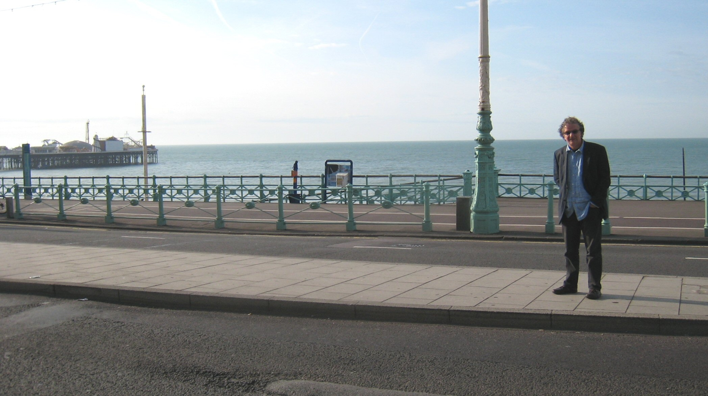

Welcome to the 14th EACL newsletter, the special yearly issue devoted to the conferences and meetings of the regional academic associations in Europe dealing with Computational Linguistics.
In this issue, Veronique Hoste reports on the 21st meeting of Computational Linguistics in the Netherlands (CLIN 21), Thomas Schmidt reports on the biennial GSCL Conference, organized on behalf of the German Society for Computational Linguistics and Language Technology, Bolette Sandford Pedersen and Inguna Skadiņa report on the 18th Nordic Conference of Computational Linguistics (NODALIDA 2011), Alfonso Urena Lopez reports on the 27th Annual Conference of the Spanish Society for Natural Language Processing (SEPLN 2011), Mathieu Lafourcade reports on the 18th Conference on Natural Language Processing (TALN 2011), and finally Anja Belz and Dimitrios Makris report on the Workshop for Vision and Language (VL 2011).
Vivi Nastase and Marie-Francine Moens, editors
21st meeting of Computational Linguistics in the Netherlands
February 11, 2011
Ghent, Belgium
The 21st edition of the annual Computational Linguistics in the Netherlands meeting was held at the University College Ghent on February 11, 2011. The aim of the conference is to offer the Dutch-Flemish computational linguistic community a venue to exchange ideas and results. The conference attracted 118 participants, most of them coming from Dutch and Flemish academic institutions, but also from companies active in the domain of computational linguistics. The program featured 55 talks, organized in 5 parallel sessions, and 18 posters on different aspects of computational linguistics. The STIL prize, first introduced at CLIN20 for the best MA thesis describing high quality research in computational linguistics, was awarded to Margaux Smets for her thesis A U-DOP approach to modeling language acquisition.
The CLIN meeting also welcomed Massimo Poesio from the University of Essex as invited speaker. His talk, entitled Rethinking anaphora, introduced the public to the use of crowdsourcing in anaphora resolution research.
At CLIN21, the brand new Computational Linguistics in the Netherlands Journal (CLIN Journal) was launched as an open access international forum for the electronic publication of high-quality scholarly articles in all areas of computational linguistics, language and speech technology. The CLIN Journal, presided by editor-in-chief Gertjan van Noord, is linked to the yearly CLIN conference and accepts submissions of full papers based on research presented at the conference. The first volume contains a selection of 7 articles resulting from CLIN21 in Ghent. The selected articles were carefully reviewed by members of the editorial board and additional expert reviewers. The journal is available online at http://www.clinjournal.org.
The program as well as the abstracts of the presentations can be consulted at http://lt3.hogent.be/clin21.
Veronique Hoste
LT3 Language and Translation Technology Team
University College Ghent, Belgium
Multilingual Resources and Multilingual Applications
September 28-30, 2011
Hamburg Germany
The biennial GSCL Conference is organized on behalf of the German Society for Computational Linguistics and Language Technology. The 2011 event was held at the University of Hamburg, Germany, between September 28th and September 30th. The local organizers were Thomas Schmidt, Kai Woerner, Hanna Hedeland, Timm Lehmberg and Daniel Stein from the Hamburger Zentrum fuer Sprachkorpora (Hamburg Center for Language Corpora, HZSK).
Following the main conference theme Multilingual Resources and Multilingual Applications, the Call for Papers especially encouraged contributions from computational linguistics and speech and language technology in which issues of multilingualism, of language contrasts or of language independent representations play a major role. Three pre-conference workshops were held which also addressed the main topic of the conference:
Including the pre-conference workshops, a total of 69 submissions for regular talks, poster or system presentations were received. For the main conference, 33 regular talks, 15 poster presentations and 4 system presentations were accepted. The conference was attended by altogether 130 participants.
Each workshop and each day of the main conference was headed by an invited talk. Invited speakers were:
Michael Sperberg-McQueen (W3C consortium): Using XQuery to search for patterns among siblings: A case study in language technology and standardization
Hans Uszkoreit (DFKI Saarbruecken): Can linguistics and translation studies benefit from MT quality barriers? Needs and opportunities from a technology perspective
Ralf Steinberger (EC Joint Research Centre - Ispra site): Combining various text analysis tools for multilingual media monitoring
Hans C. Boas (University of Texas at Austin): Constructing parallel lexicon fragments based on English FrameNet entries: Semantic and syntactic issues
Felix Sasaki (DFKI, FH Potsdam): The Multilingual Web: Opportunities, Borders and Visions.
Participants and organizers agreed that the conference was characterized by a very friendly, lively and constructive atmosphere, resulting, first and foremost, from the high quality of contributions and discussions, but secondly also from the fact that Hamburg experienced a stretch of exceptionally blue sky and warm temperatures in this last week of September.
Extended abstracts of the conference were assembled in a proceedings volume published as:
Hedeland, Hanna; Schmidt, Thomas; Woerner, Kai (2011)
Proceedings of the GSCL conference Multilingual Resources and Multilingual Applications,Hamburg
In: Working Papers in Multilingualism, Series B (96). Hamburg.
Thomas Schmidt
Hamburg Centre for Language Corpora
University of Hamburg, Germany
http://www.corpora.uni-hamburg.de
The 18th Nordic Conference of Computational Linguistics (NODALIDA)
May 11-13, 2011
Riga, Latvia
The 18th Nordic Conference of Computational Linguistics, also called NODALIDA 2011, was held 11-13 May 2011 in Riga, Latvia. The conference registered 141 participants. The computational linguistics and language technology communities in the Nordic and Baltic countries consider the NODALIDA conference as one of the important events for meeting and interchanging new research in the field. Through the establishment of the Northern European Association of Language Technology (NEALT) in 2006, the NODALIDA conference has increased its importance and is now recognized outside the Nordic regions, as can be seen by the fact that the Program Committee received several European submissions from outside the Nordic and Baltic countries, as well as submissions from outside Europe such as the US, India, and Pakistan.
According to the reviews provided by the Scientific Committee, a vast majority of the papers submitted for the conference this year were of good quality. This is a positive sign of the fact that language technology in the Nordic and Baltic countries is thriving. However, maintaining the tradition of the NODALIDA conference running over two days plus a workshop day, time scarcity enforced the program committee to accept only a limited number of papers. This means that even with an acceptance rate above 60%, several quality papers were rejected. To sum up in figures, we received altogether 85 submissions from 20 countries in the four categories of full papers, short /demo papers, student papers, and workshops. Each submission received three reviews and borderline cases were further subjected to discussion among the Program Committee members. For the conference, we have accepted 53 papers which appear in the proceedings, as well as three workshops which produced their own proceedings. Of the accepted papers in the main conference, 33 were long papers presented as talk or poster, 14 were short papers presented as poster or demo, and six were student papers of which three were presented as talk and three as poster. It should be pointed out that most of the submissions are from the Nordic countries and only a limited number of papers are from the Baltic region. This may be because the Baltic HLT conference was held only recently. The papers selected for the conference represent a wide range of topics of research, including corpus linguistics, lexicography, morphological and syntactic processing, machine translation, speech technologies, semantics, and other areas of language technology.
NODALIDA 2011 also presented three invited speakers, one of which was invited to present ongoing research in the host country, Latvia, and two others to present ongoing research in Sweden and Scotland, respectively. The invited talks concerned central aspects of language technology such as discourse analysis, dependency parsing, and controlled natural languages.
Bonnie Webber from University of Edinburgh talked about discourse structures and language technology and discussed how discourse structures can help to improve language technologies, and further, how language technologies can help to induce and model discourse structures.
Joakim Nivre from Uppsala University gave a survey of recent advances in so-called bare-bones dependency parsing; focusing in particular on transition-based methods for highly efficient parsing.
Guntis Bārzdiņš from University of Latvia talked about a new kind of rich controlled natural language which allows to narrow the gap with true natural language.
In addition, the conference program included three workshops; two on the specialized topics terminology and Constraint Grammar, and one with the broader focus on visibility of language resources.
Moreover, the conference attracted a satellite event, held before the workshops: The project-related meeting in META-NET/META-NORD which is the Nordic and Baltic branch of a Network of Excellence dedicated to building the technological foundations of a multilingual European information society. Finally, during the conference the third NEALT business meeting was held.
Proceedings from the conference were published on-line in the NEALT Publication Series Vol. 11 at University of Tartu, see here.
Bolette Sandford Pedersen
Program Chair
NODALIDA 2011
Inguna Skadiņa
Local Chair
NODALIDA 2011
The 27th edition of the Annual Conference of the Spanish Society for Natural Language Processing
September 5-7, 2011
University of Huelva, Spain
The 27th edition of the Annual Conference of the Spanish Society for Natural Language Processing (SEPLN, http://www.sepln.org) took place in the University of Huelva, Spain, on September 5, 6 and 7, 2011. The Local Organizing Committee chair was Manuel J. Mana Lopez.
The aim of the conference is to provide a forum for discussion of the latest research work and developments in the field of Natural Language Processing to the scientific and business communities. The conference also aims at showing new possibilities of real applications and R&D projects in this field. Moreover, there is the intention of identifying lines of research according to the needs of the market.
SEPLN 2011 received 78 submissions, out of which 60 were long papers and 18 were submitted as short papers (10 demonstrations and 8 ongoing projects). The conference accepted 33 long papers (out of 60) as oral presentations giving a selection rate of 55%. The papers were selected by a Program Committee of 47 reviewers from Europe, Mexico and Cuba. The reviewing process was a two-round review and the submitted papers were subjected to a blind review by at least three members of the Program Committee. The papers were published in issue 47 of the Procesamiento del Lenguaje Natural journal (ISSN: 1135-5948, ISSN: 1989-7553) available at the SEPLN site.
The conference also had two invited talks:
Hugo Zaragoza (Yahoo! Research Barcelona): Descriptive Statistics for Informational Search Results.
Henning Mueller (University of Applied Sciences Western Switzerland): Using textual and visual information for the retrieval of images.
and, a tutorial:
Jordi Atserias (Yahoo! Research Barcelona): UIMA, entornos y librerias de PLN.
The main conference was followed by two parallel workshops held on the evening of September 7:
SEPLN 2011 had 110 participants.
SEPLN organizes a conference every year, the next one is scheduled for September 2012 and will take place in Castellon (Spain).
L. Alfonso Urena Lopez (University of Jaen)
President of SEPLN
18th conference on Natural Language Processing "TALN"
in conjunction with the:
6th conference on the Logical Aspects of Computational Linguistics (LACL) and the
16th conference of PhD Students in Natural Language Processing (RECITAL)
and their satellite workshops:
DEFT 2011 : 7th French speaking Text Mining Evaluation Campaign
DISH 2011 : 2nd meeting of the Students in Computing and Human Sciences
DEGELS 2011 : 2nd workshop of the Computational tools for the French "Sign Language"
June 27th- July 2nd, 2011
Montpellier, France
TALN (Traitement Automatique des Langues Naturelles) is the major French speaking scientific event in Natural Language Processing (NLP) and Computational Linguistics (CL). It is organized on turns by the NLP academic teams from different universities and different French speaking countries, after agreement by the steering committee of the French Society for Computational Linguistics, ATALA (Association pour le Traitement Automatique des Langues,).
TALN has been organized since 1994, and aims at presenting innovating researches and approaches in Computational Linguistics and Natural Language Processing. It offers a unique opportunity, for all actors of R&D in NLP of the French speaking area (France, Belgium, Switzerland, Luxembourg, Canada, and also Northern Africa and the Middle and Far East), to meet together, and to promote their works. Students, academics and companies are invited to participate to the conference. Although mostly devoted to French, TALN success has been growing since 1999, and has attracted several non French speaking researchers, and several communications and papers are in English. Its scientific committee comprises scientists ranging from Canada to Australia.
The topics scope of TALN engulfs the whole thematic field of CL and NLP. The present edition, the 18th one, has attracted around 250 participants, mostly researchers and students in CL and NLP. It has been held in conjunction with RECITAL, the NLP Students Conference (15th edition), and LACL (Logical Aspects of Computational Linguistics). Moreover, several workshops were joined to TALN: DEFT, the French Speaking "Trec-Like" evaluation campaign and conference, DEGELS, the Sign language workshop, and DISH, "computer science students working for human sciences !". All workshops were successful. The general atmosphere during the conference and the feedback of the participants were both excellent. Three invited talks were provided:
Vladmir Fomichov, from the Moscow National Research University, Higher School of Economics, on The prospects revealed by the theory of K-representations for bioinformatics and Semantic Web;
Nicholas Asher, IRIT-CNRS and University Paul Sabatier (Toulouse France), on Theorie et Praxis Une optique sur les travaux en TAL sur le discours et le dialogue (Theory and praxis: A point on view on NLP research on discourse and dialogue);
Claire Gardent (LORIA- CNRS and INRIA, Nancy, France) on Sentence Generation: Input, Algorithms and Applications.
The remaining program included 42 long presentations (20 minutes each), and 40 short (3 minute boosters) presentations, associated with posters. Sessions for software demonstrations were also organized, and more than 20 demos attracted several interested participants. The conference ended with the general assembly of ATALA, and the ATALA TALN award was won by the paper of Joseph Le Roux, Benoît Favre, Ghasem Mirroshandel and Alexis Nasr Modèles génératif et discriminant en analyse syntaxique: expériences sur le corpus arboré de Paris 7 (Generative and discriminant models in syntactic analysis: Experiments on the Paris 7 tree based corpus).
Submissions to TALN were numerous. 94 long papers were submitted and only 42 were selected by the program committee. These papers were included in the proceedings as 12-page articles. Another call for papers was then sent for (short) position papers, ending up, if selected as posters presentations (with boosters). Again, more than 90 proposals were provided, and 51 were selected as 6 page position papers.
Last but not least, the student conference, RECITAL, had its sessions merged with TALN, and young researchers were successfully appraised by the participants. The RECITAL award was won by Charlotte Roze for her paper Vers une algèbre des relations de discours pour la comparaison de structures discursives (Towards a discourse relations algebra for discursive structures comparison).
Violaine Prince
University Montpellier 2 and LIRMM-CNRS
prince@lirmm.fr
Mathieu Lafourcade
University Montpellier 2 and LIRMM-CNRS
mathieu.lafourcade@lirmm.fr
V&L Workshop on Vision and Language (VL'11)
September 15th, 2011
University of Brighton, UK
The V&L Net Workshop on Vision and Language 2011 (VL'11) took place in the brand new Huxley Building at the University of Brighton on 15th September 2011. The chief purpose of the workshop was to bring the computer vision and language processing communities together and to facilitate community building and networking between them. It was organised by V&L Net (the EPSRC Network on Vision and Language) and endorsed by EACL (the European Chapter of the Association for Computational Linguistics) and BMVA (the British Machine Vision Association).
The University of Brighton's new Huxley Building, opened as recently as July 2011 by Prof Lord Robert Winston.
The day started with two introductory invited talks that were intended to provide overviews of the computational linguistics and computer vision fields respectively. First, Prof. Khurshid Ahmad (Trinity College Dublin) discussed how statistical analysis of large volumes of text facilitates learning of specialised ontologies, drawing on examples of how ontology terms are linked to visual features. Next, Prof Roy Davies (Royal Holloway) presented an introduction to computer vision, highlighting the significance of low-level feature extraction from images and videos for high-level tasks such as object and activity recognition.
The other two invited talks focused on specific cases of cross-disciplinary research between vision and language. The title of Prof Yiannis Aloimonos's (University of Maryland, see picture) presentation was Robots need language: A computational model for the integration of vision, action and language. Specifically, he discussed an interaction model of vision and language that can boost the performance of vision tasks and lend cognitive capabilities to active robots. Prof Ted Briscoe (University of Cambridge) presented research on Integrating textual information extraction and visual similarity search for biomedical research papers.

Keynote speaker Yiannis Aloimonos takes his morning stroll on Brighton beach, within sight of the pier.
The afternoon session was dedicated to the presentation of 17 posters. First, poster authors presented short "teaser" presentations of their work. This was followed by a traditional poster session which allowed participants to discuss the work presented in more detail and to explore opportunities for collaboration. Networking was further facilitated by pre-arranged meetings between workshop participants, and by the mini-poster board, for which all participants were invited to bring A3-sized mini-poster, presenting their research group, project or research idea.
The technical programme of the workshop was wrapped up by an informal discussion on the future of cross-disciplinary research between vision and language. The workshop was rounded off by an evening drinks reception accompanied by superb live jazz music.
Overall, the workshop provided a plethora of networking opportunities between V&L Net members and at the same time set up a technical dialogue on bridging the research areas of vision and language. Feedback from participants has been enthusiastic. We have put all the abstracts, slides, posters and mini-posters from the workshop online (http://www.vlnet.org/VL-Workshop-2011.html).
The 15th century Herstmonceux Castle in East Sussex, England.
Meanwhile, we have started planning next year's V&L Net meeting (VL'12), likely to be held in September 2012, hopefully at the beautiful Tudor castle of Herstmonceux in East Sussex (see picture). We look forward to seeing a great many vision and language researchers at VL'12!
Anja Belz
University of Brighton
A.S.Belz@brighton.ac.uk
Dimitrios Makris
Kingston University
D.Makris@kingston.ac.uk